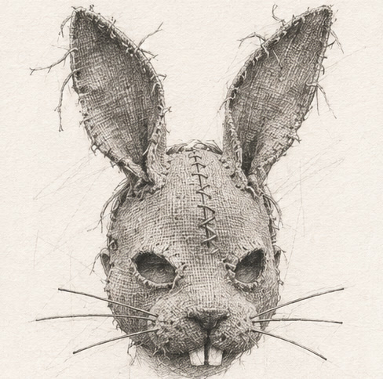

← Tous les films Puma Rabbits Spec film · Publicité · IA générative9:16 Lire Voir sur Vimeo Revenir à l’affiche Les coutures du masqueMatière, graphite généré d’après la référence de costume. Une proposition publicitaire indépendante, en format vertical, qui associe des personnages masqués à un univers industriel.Personnages et masques